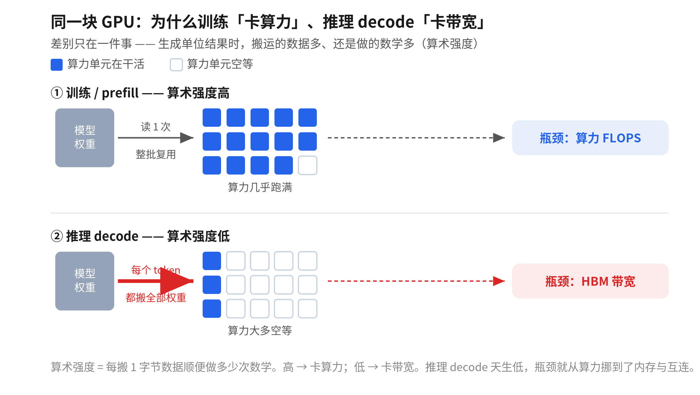
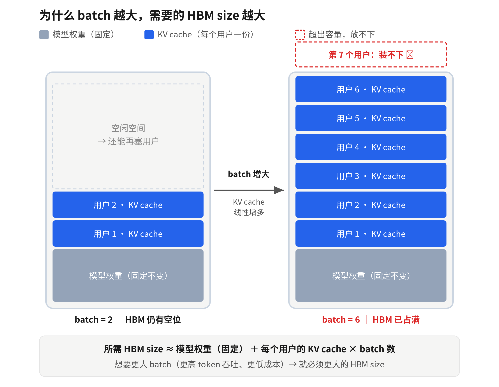
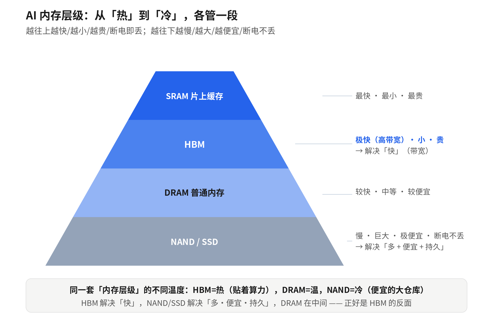
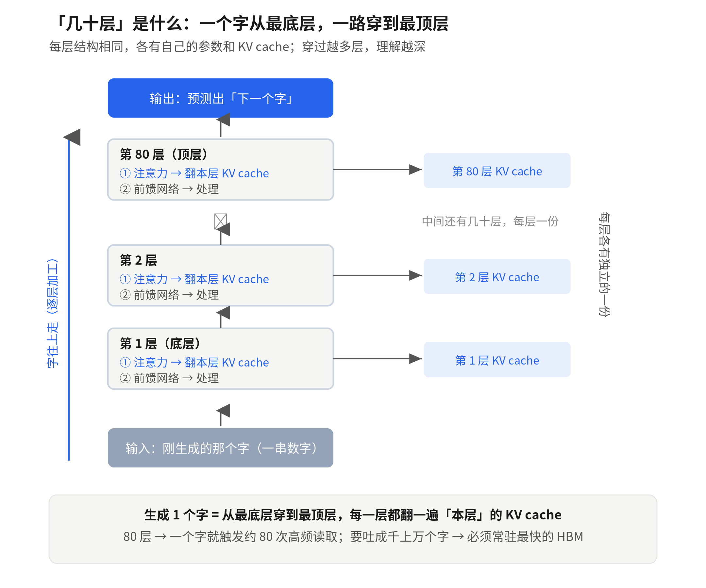
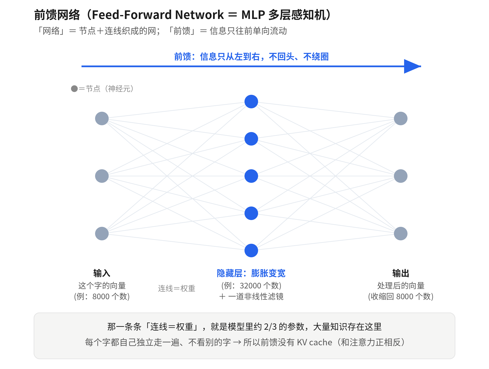
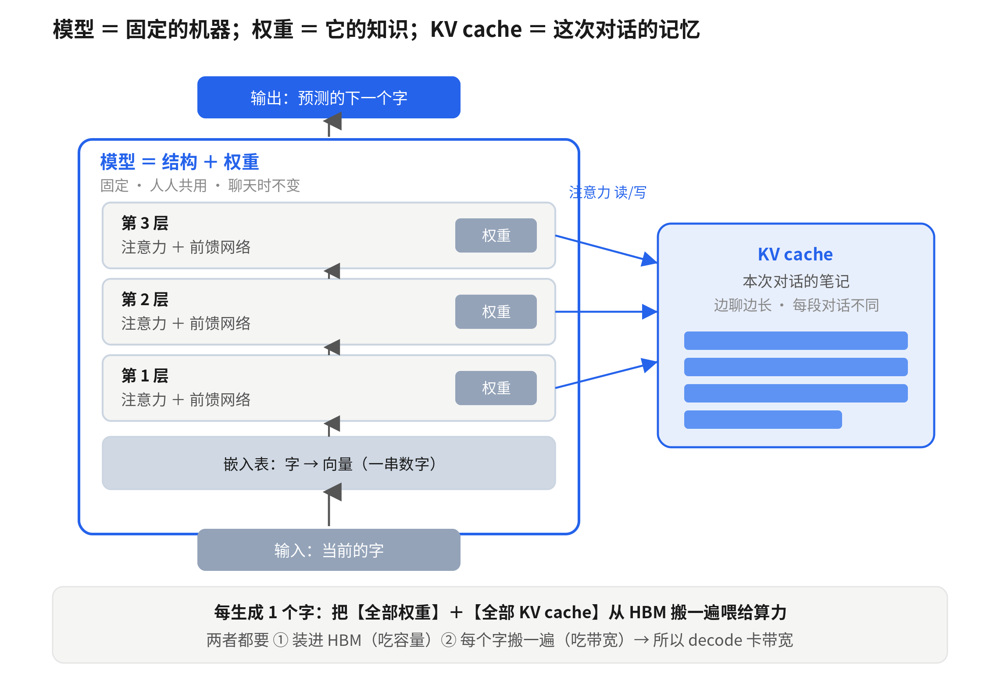
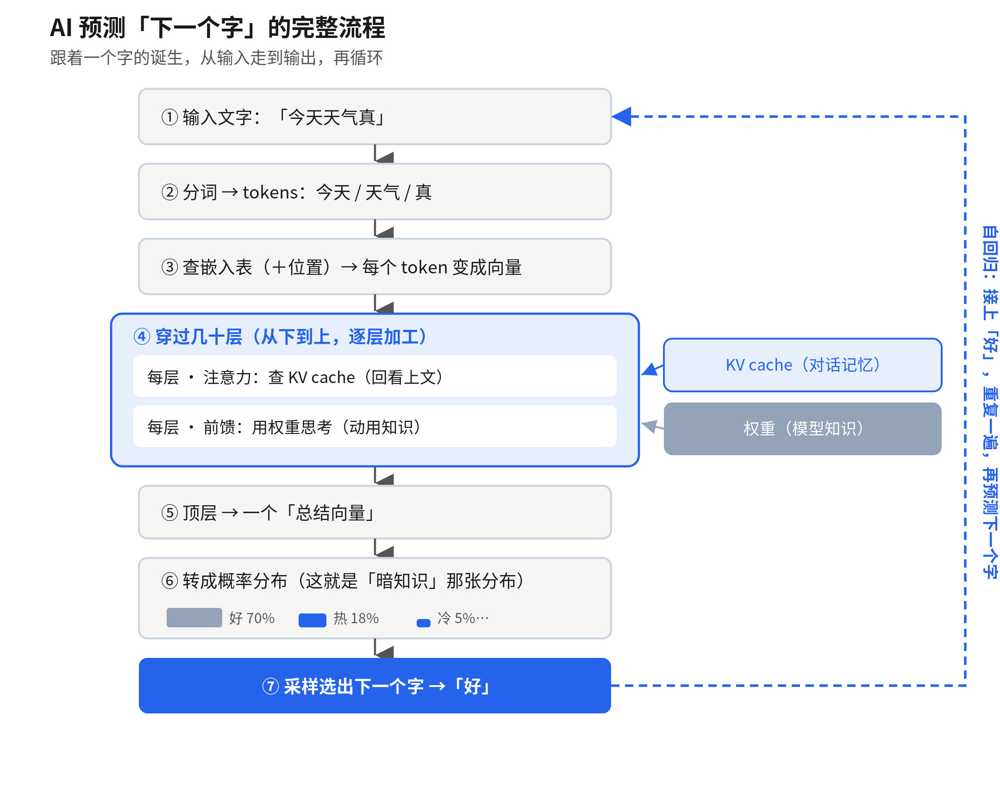
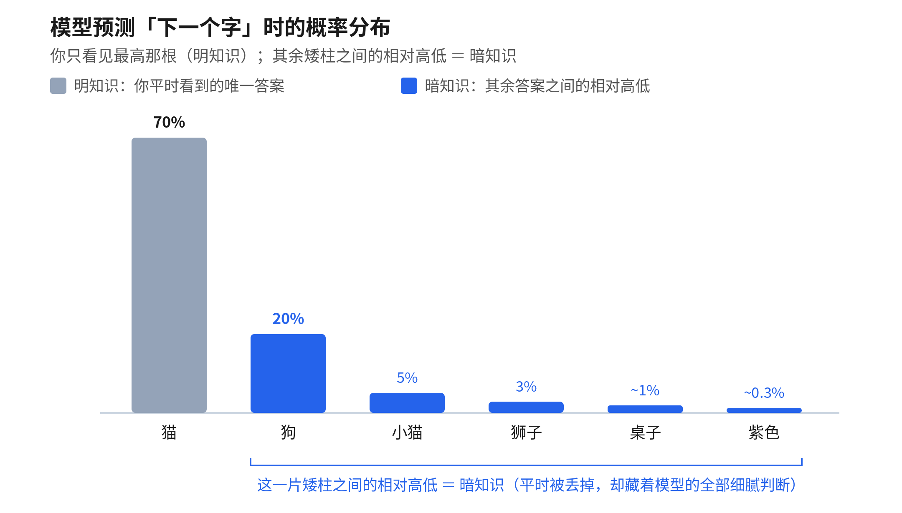

AI 推理 × 存储超级周期
——一份费曼小白式的系统学习笔记
从云端 Agent 基建，到大模型内部机制，到内存瓶颈与投资逻辑
整理自一次完整的深度对话 · 2026 年 6 月
导读
这份文档把一次很长的对话，系统沉淀成一份可反复查阅的学习笔记。它不按聊天的先后顺序堆叠，而是重新梳理成七个有逻辑的部分：从最宏观的「云端 Agent 与新一代基础设施」出发，逐步深入到「推理的硬件第一性原理」「内存层级与瓶颈」，再钻进「大模型内部到底怎么运转」，然后回到「模型竞争与蒸馏」「存储超级周期的产业与投资逻辑」，最后落到「哲学与延伸思考」。
全文坚持「费曼小白」的讲法：每个概念都先用大白话和比喻讲清「是什么、为什么」，再上数据和术语；适合对比的内容用表格呈现；对话里出现过的每一张示意图都重新做成了清晰图片，嵌在它所解释的文字旁边。你完全可以从任何一个你好奇的部分单独读起。
一条贯穿全文的主线值得先记住：智能本身正在变成廉价的商品，而价值会持续迁移到「稀缺的互补品」上——今天是内存（HBM），明天是光互连，更长期是电力。这条「价值跟着瓶颈走」的逻辑，会在硬件、模型竞争、投资、甚至人生隐喻里反复出现。
目录
第一部分 云端 Agent 与新一代 AI 基础设施
1.1 本地 Agent vs 云端 Agent
1.2 AI 应用 vs Agent：三个判断测试
1.3 Cloud Agent Harness：面向 Agent 的云服务
1.4 案例：腾讯 WorkBuddy 算不算云端 Agent
第二部分 AI 推理的硬件第一性原理
2.1 从训练时代到推理时代：KPI 为何从 FLOPS 变成 token 吞吐
2.2 算术强度与「内存墙」
2.3 token 吞吐 = HBM size × HBM 带宽
2.4 prefill、decode 与 batch
2.5 卡点不只内存：互连与电力
第三部分 内存层级、带宽与瓶颈轮动
3.1 带宽 vs 容量
3.2 内存层级：HBM / DRAM / NAND
3.3 DRAM 断电会消失吗（易失 vs 非易失）
3.4 内存瓶颈会一直持续吗：瓶颈的轮动
第四部分 大模型内部机制（费曼拆解）
4.1 token、向量与嵌入表
4.2 模型的「层」
4.3 注意力与 KV cache（Q / K / V）
4.4 前馈网络 FFN
4.5 权重，以及模型 / 权重 / KV cache 三者关系
4.6 自回归
4.7 完整流程：AI 如何预测下一个字
第五部分 蒸馏、暗知识与模型竞争
5.1 蒸馏：怎么做、为什么有效
5.2 暗知识 Dark Knowledge
5.3 模型竞争：差距会收窄吗
第六部分 存储超级周期：产业与投资逻辑
6.1 内存为什么「这次不一样」：摆脱周期的三条件
6.2 DRAM 与 agentic CPU 的新需求
6.3 NAND / SSD
6.4 长鑫扩产的影响；御三家
6.5 估值悖论：基本面强 ≠ 股价涨
6.6 周期的钱 vs 价值的钱；久期；弹性；边际稀缺
6.7 四次技术革命的劳动 / 资本份额
第七部分 哲学与延伸思考
7.1 「预测下一个字」的隐喻、自回归与人生
7.2 AI 的「不可复用」与边际成本
7.3 边际稀缺在爱情里
附录 术语表 · 来源
第一部分 云端 Agent 与新一代 AI 基础设施
1.1 本地 Agent vs 云端 Agent
Agent 落地分两块市场：本地和云端。本地 Agent（如 Claude Code、Codex）跑在你自己的机器上，由一个人坐在前面盯着，一次干一个任务——本质是「个人生产力工具」，增强坐在它前面的那个人。但企业（尤其中小企业 SMB）要的不是这个，而是把 AI 能力嵌进业务流程里自动运行。
有几个场景本地根本干不了：① 无人值守、7×24 运行——业务流程要不间断，你不可能让员工电脑一直开着挂在那；② 事件触发，而非人触发——系统来了封邮件、来了个表单提交，自动触发 Agent，这要求它是常驻、可被 API/事件调用的服务；③ 并发与规模——同时服务上千客户，要同时跑上千个实例并弹性扩缩容；④ 嵌进产品给海量终端用户用——不可能让每个用户自己装一个 Agent。一句话：本地 Agent 是给个人的瑞士军刀，云端 Agent 是企业把 AI 变成产品功能、变成自动化流水线的生产设施，B 端的钱在云端。
| 维度 | 本地 Agent | 云端 Agent |
| 运行方式 | 人盯着、一次一个任务 | 无人值守、7×24 |
| 触发 | 人输入 prompt | 系统事件 / API 调用 |
| 并发 | 1 人 1 会话 | 同时上千实例、可扩缩容 |
| 定位 | 个人生产力工具 | 嵌入业务/产品的生产设施 |
| 典型 | Claude Code、Codex | 客服自动化、嵌入 SaaS 的 AI 功能 |
1.2 AI 应用 vs Agent：三个判断测试
很多「AI 产品」其实只是调用大模型的应用，不是 Agent。判断是不是 Agent，看三个测试：① 有没有一个自主循环（观察 → 思考 → 行动 → 再观察），自己决定下一步？② 会不会调用工具、真的改变环境状态（执行代码、改数据库、调外部 API、发消息）？③ 能不能在没人逐步盯着的情况下，连续做完多步直到目标达成？大部分「是」就是 Agent，大部分「否」就是 AI 应用。
举例：一个「圆桌对话」式的网站，用户发消息、后端调模型（带人物设定与检索）、返回文字——三个测试基本都是「否」，它是带 RAG 的应答式 AI 应用，需要的是普通 web 基建（服务器、数据库、向量库、模型 API），不需要 Agent 那套。核心区别在于外面那层壳：AI 应用 = 一次模型调用返回文本；Agent = 把模型调用包进「循环 + 工具 + 状态」里，给个目标它自己跑一串动作把目标做完。
| AI 应用 | Agent | |
| 本质 | 问一句、答一句 | 给目标、自己跑完多步 |
| 结构 | 一次模型调用 → 文本 | 循环 + 工具 + 状态 |
| 改变环境 | 否（只生成文字） | 是（执行、调用、操作） |
| 谁驱动 | 每一步都靠人 | 目标给定后自主推进 |
1.3 Cloud Agent Harness：面向 Agent 的云服务
当你把 Agent 从「本地跑着玩」变成「云端稳定托管、给真实业务用」，会冒出一堆与业务无关、但不解决就跑不起来的工程问题：沙箱（Sandbox）隔离与秒级启停、上下文管理、记忆（Memory）持久化、错误恢复与容错（断点续跑——这是最难的，因为 Agent 是概率性的、会失败）、编排与人工审批、可观测性（追踪、审计、成本）、多租户隔离、限流与成本治理。Cloud Agent Harness 就是把这堆通用基建封装成标准化平台，让做业务的团队不必从头造，直接专注写业务逻辑。
它的类比是：上一代要做互联网产品，你不可能自己买服务器、写数据库内核，AWS 把这些 infra 商品化，开发软件的边际成本暴跌 → SaaS 大爆发；这一代要做 Agent，业务团队也不该自己造沙箱、记忆、容错，需要一个「面向 Agent 的 AWS」。这个类比抓住了一个真实规律：新软件范式爆发的前提，是它的基础设施层先成熟、被商品化。
需要保留的怀疑：① 「上万倍市场」是融资修辞，不是论证；② 谁来提供这一层是开放问题——模型厂商往下做、现有云厂商往上做（它本就跑在它们算力上）、独立创业公司三股力量在抢，「绝不只是今天的寡头」既可能对、也可能恰恰相反；③ Harness 很多部件是已有 infra 的改造而非重造，护城河未必深。底层逻辑成立，但具体赢家未定。
1.4 案例：腾讯 WorkBuddy 算不算云端 Agent
WorkBuddy（腾讯，CodeBuddy/「小龙虾」团队）用三个测试看：它能自己规划多步、调工具（通过 MCP 连 GitHub/Jira/Drive/Gmail 等）、一句指令把整个任务做完——是货真价实的 Agent，远超应答式应用。但在「本地 vs 云端」这条轴上要小心：消费者版任务其实是在用户自己的办公电脑上执行，微信只是远程遥控的入口——所以它更接近「本地 Agent + 微信远程唤醒」，而不是纯云端 Agent；它的企业版/Agent Suite（跑在腾讯云上）才往真正的云端 Agent 靠。整体看，WorkBuddy 正是腾讯在做「面向 Agent 的云基建」的产品化表现，是前述逻辑的现实佐证。（来源：WorkBuddy 官网与多家科技媒体报道，2026 年）
第二部分 AI 推理的硬件第一性原理
2.1 从训练时代到推理时代：KPI 为何从 FLOPS 变成 token 吞吐
FLOPS（Floating Point Operations Per Second，每秒浮点运算次数）几十年来是衡量算力的标准——它像发动机的马力，越高代表纯算力越强。过去 GPU 拼的就是 FLOPS。但到了 AI 推理时代，最高 KPI 不再是算力，而是「每花一块钱、每一度电，能吐出多少 token」（token 吞吐量），其次是 token 速度。这就是老黄「AI 工厂」概念的本质：用最低成本输出最多 token。训练时代卖的是 TCO（买越多越省），推理时代卖的是 token 经济学（买越多越赚）。

图 1 同一块 GPU，为什么训练「卡算力」、推理 decode「卡带宽」
更底层的根因是「算术强度」（每搬运 1 字节数据，顺便做多少次数学）。训练和 prefill 是大批量矩阵运算，一次读入的权重被一大批 token 反复复用，每字节做很多次数学 → 高算术强度 → 卡算力（FLOPS 是真本事）。推理的 decode 是一个字一个字蹦，为生成一个 token 要把整个模型权重完整搬一遍、却只做一丁点数学 → 极低算术强度 → 算力空等，卡在 HBM 带宽。所以与其说「训练卡算力、推理卡内存」，更准的根因是「算术强度高就卡算力，低就卡内存」，而推理 decode 天生低。
2.2 算术强度与「内存墙」
过去二十年，算力指数级猛涨（隔一两年翻倍），而内存带宽涨得慢得多，差距一年年累积成一道墙——这就是「内存墙」。结果是现代 GPU 变成「算力富、带宽穷」：它搬运 1 个字节数据的工夫，够它顺手做好几百次数学。「墙」的精髓是「撞上去、过不去」：你把算力（发动机）造得再快，撞上这堵墙（内存喂不上数据）就快不动了，多出来的算力全浪费在顶着墙上。HBM 那种上千根线的超宽接口，本质就是行业在拼命把这堵墙往后推。
2.3 token 吞吐 = HBM size × HBM 带宽
从第一性原理推导：token 吞吐 = 批处理量 batch size × 每用户 token 速度。其中 batch 的瓶颈是 HBM size（每个请求自带几 GB 到几十 GB 的 KV cache，必须常驻 HBM，batch 越大、KV cache 线性变大、所需 HBM size 线性变大）；token 速度的瓶颈是 HBM 带宽（decode 每生成一个 token 都要反复读权重和 KV cache，带宽越高越快）。用「机场接驳车」比喻：车厢大小 = HBM 容量（一次能拉多少乘客 = batch），车门宽度 = HBM 带宽（上车多快 = 出字速度），吞吐 = 车厢 × 车门。这两个维度要代代翻倍，才能维持 token 吞吐每代翻倍——这是 HBM 内存第一次直接决定最高 KPI。（框架来源：fin「AI 半导体终局推演 2026」系列）

图 2 为什么 batch 越大，需要的 HBM size 越大
2.4 prefill、decode 与 batch
推理分两个阶段，瓶颈不同：prefill（预填充）是把你整段输入一次性读完、并行处理，吃算力（FLOPS）；decode（解码）是逐字往外蹦输出，每个字都要搬全部权重和 KV cache，吃带宽。batch（批处理）不是阶段，而是把很多用户请求捆在一起一次过，摊薄成本，但 batch 大小受 HBM 容量限制。一句口诀：prefill 拼算力，decode 拼带宽，batch 拼容量。
为什么 decode 必须串行：① token 级——自回归生成天然串行（必须先有第 1 个字才能算第 2 个）；② 任务级——agent 把一个任务变成几十步的依赖链，每步要等上一步的输出，而中间 token 没人读，端到端等待 = 所有串行步骤之和。所以 agent 时代 token 速度（即 HBM 带宽）成了体验瓶颈。
2.5 卡点不只内存：互连与电力
decode 阶段卡的是内存；但在系统层（AI 工厂是 72 卡当一台用），还有两道卡点。其一是互连：把很多 GPU 连成「一颗大 GPU」靠的是 scale-up 互连（NVLink），而要把这个「相干域（coherent domain，一组 GPU 共享同一份一致内存、像一个整体）」做得更大，铜线在距离/功耗上会撞墙，使能技术是光互连/共封装光学（CPO）——目前还在从实验室走向量产的「爬坡」中。其二是电力：一切都按「每 MW 能产多少 token」算账，因为电是最终标尺；内存/算力/互连是工程问题（砸研发就能改善），而电力受电网、发电、审批等物理与基建约束，最难解决，最可能成为终极天花板。
第三部分 内存层级、带宽与瓶颈轮动
3.1 带宽 vs 容量
存储有两个完全独立的属性：容量（能装多少，单位 GB）和带宽（进出多快，单位 GB/秒）。用水箱比喻：容量 = 水箱多大，带宽 = 出水的水管多粗。一个巨大水箱可以只配一根细吸管（容量大、带宽小），所以「大」和「快」是两回事。识别技巧：单位带「每秒」的就是带宽（速度），不带的就是容量（大小）。容量决定 batch 多大、对话多长；带宽决定字蹦多快。
关于「带宽是不是连接的活」——是的，带宽就是某条连接的属性，只是机器里有好几条连接：HBM ↔︎ 同一颗 GPU 计算核心（封装内、毫米级）= 内存带宽；GPU ↔︎ GPU（NVLink）= 互连带宽；服务器 ↔︎ 服务器 = 网络带宽。HBM 全称 High Bandwidth Memory（高带宽内存），命名卖点就是带宽：它 3D 堆叠、紧贴 GPU、用上千根线的超宽总线连过去，就是为了把「内存 → 计算」这条线的带宽拉满。所以 HBM 是「自带一根粗管子的内存」——既是内存（有容量），又为连接做了极致优化（高带宽）。
3.2 内存层级：HBM / DRAM / NAND
从「热」到「冷」排一条链：SRAM（片上缓存，最快最小最贵）→ HBM（极快、贵、容量小，解决「快」）→ DRAM（普通内存，居中）→ NAND/SSD（慢、巨大、极便宜、断电不丢，解决「多 + 便宜 + 持久」）。每层都是在「快 / 大 / 便宜 / 持久」之间选了不同的点。注意 NAND 是芯片，SSD 是用一堆 NAND 颗粒 + 控制器做成的盘——是「原料和成品」的关系，就像 HBM 是用 DRAM 颗粒堆出来的。

图 3 AI 内存层级：从「热」到「冷」，各管一段
它们不是三个独立故事，而是同一套 AI 内存层级在不同温度层：HBM 解决「快」，NAND 在 AI 里充当又大又便宜的「冷数据仓库 / 溢出缓冲池」——HBM 装不下的冷 KV cache 往下卸到 NAND（KV cache offloading），还有存模型权重、AI 视频、sandbox 数据。
3.3 DRAM 断电会消失吗（易失 vs 非易失）
会，而且消失得很彻底。DRAM 是易失性（volatile）内存——名字里的 Dynamic（动态）就点明：每个比特用一个会漏电的微小电容存，就算一直通电也要每秒刷新成千上万次才能维持；一断电立刻漏干。比喻：DRAM 像漏水的桶（要不停加水/刷新），NAND 像密封的瓶（把电子关在不漏电的浮栅里，断电也能存好几年，是非易失）。所以 HBM/DRAM 断电即丢，NAND/SSD 才是「关机也不丢」的永久保存层。
3.4 内存瓶颈会一直持续吗：瓶颈的轮动
瓶颈不会被「消灭」，只会「转移」——这是计算机史的铁律：哪个最稀缺，钱和研发就涌过去、它改善最快，然后另一个变成新瓶颈（像挤气球，也像木桶最短的那块板）。内存会缓解（供给扩张 + 架构降需求），但因为算力好堆、带宽难堆，它会长期是一线约束。三种未来：① 算力反超——若推理变重（大量 reasoning、AI 视频）或 batch 够大，算力可能重新吃紧；② 光互连——随集群变大成为 scale-up 瓶颈，已在发生；③ 电力——最可能的终极天花板。我的判断：现在内存急性稀缺，光互连并行抬头，电力是更长期、更难绕开的方向。价值永远跟着「当下那块最短的板」走。
第四部分 大模型内部机制（费曼拆解）
4.1 token、向量与嵌入表
模型不直接处理文字。它先把文字切成 token（文字小块，可能是字、词、或词的一部分），每个 token 去「嵌入表」查到自己那一行，变成一串数字（向量，比如 8000 个数）——这是它的「意思坐标」。要分清三样东西：token = 文字块本身；ID = 它在词表里的编号（一个整数）；向量 = 它被查表换成的那串数字。token 不是向量，向量是 token 被查表换成的东西。
「8000 个数」是 8000 个数字、描述一个 token，不是 8000 个词。为什么要这么多数字？因为意思是多维度的——就像描述一个人要用身高、年龄、幽默感等很多数字，颜色用 3 个数（RGB），词的意思更丰富，要 8000 个「刻度」。这串向量的长度叫 d_model（模型维度/隐藏维度），是个由人选定的超参数，常取 2 的整数次幂附近的「漂亮数字」（如 4096、8192、12288）——因为 GPU 按 2 的幂大小的块处理数据，8192 能被整除、跑得最满，8000 则留零头。这些数字的数值是训练时从随机数一点点学出来的（用法相似的词，数字也相似）。每个模型都有自己专属的一套分词器和词表，没有跨模型的统一标准——同一句话不同模型切出的 token 数都不同。
一个字大概几个 token：中文一个汉字约 1–2 个 token（常用字常常 1 个）；英文一个常见单词通常 1 个 token，经验公式是 1 token ≈ 4 个英文字母 ≈ 0.75 个单词。
| 概念 | 是什么 | 例子 |
| token | 文字块本身 | 「苹果」「apple」「un-」 |
| ID | 它在词表里的编号 | #5234（一个整数） |
| 向量 | 查表换来的一串数字 | [0.12, -0.34, …] 共 8000 个 |
| d_model | 向量的长度（维度） | 8192（人选的超参数） |
4.2 模型的「层」
「层」就是把同一种「处理站」上下摞起来很多个。文字变成向量后，从最底层进，逐层向上加工，到最顶层吐出「下一个字」。每一层结构相同、各有自己的参数；靠下的层抓局部/语法，靠上的层抓抽象/语义。层数 = 深度，这就是「深度学习」的「深」——一层变换有限，几十层叠起来才能层层精炼出复杂理解（GPT-3 有 96 层，常见大模型 32–120 层）。

图 4 模型的「几十层」：一个字从最底层穿到最顶层
每一层里有两个部件：注意力 + 前馈。关键：每一层都有自己一份 KV cache，生成一个字要穿过所有层、每层翻一遍它自己的 KV cache。所以 80 层就意味着生成一个字要翻约 80 次 KV cache（还要扫 80 层权重），而模型要吐成千上万个字——这种高频读取，决定了这些数据必须常驻最快的 HBM。「层数」其实是个隐藏的乘数：它同时放大了 KV cache 的总量（每层一份）和每个字的读取次数。
4.3 注意力与 KV cache（Q / K / V）
注意力（attention）负责「横向沟通」：每个字回头看上文所有的字，把相关信息拉过来。它来自一套「检索」结构：每个字生成三个向量——Query（查询，我在找什么）、Key（键/标签，我是什么）、Value（值/内容，我能给什么）。当前字拿 Query 去和所有旧字的 Key 比对，算出相关度（注意力权重），再按权重把它们的 Value 混合取回。KV = Key-Value（键值），不是「关键价值」。
KV cache 是把前面每个字算好的 K、V 向量存起来，免得每蹦一个字都重算。关键澄清：它不是「有损的摘要/压缩」，而是「精确存档」——用它和从头重算得到的值在数学上完全一样，不丢信息、不影响正确性，纯粹省掉重复计算。cache（缓存，读音同 cash「现金」，不是 catch）的意思就是「把已经算过的东西存起来重复用」。为什么缓存 K、V 不缓存 Q：旧字的 K、V 算过一次就不变，可以存下来复用；Query 是当前字现算的。（真正会损一点精度的，是另一类可选的 KV cache 压缩技术，如量化、MLA 潜在压缩，那才有精度权衡。）
生成的算力随长度怎么涨？是线性，不是指数。生成第 N 个字 ≈ 恒定（搬全部权重）+ 线性（和前 N 个字的笔记各比对一次）。没有「组合爆炸」：旧字的信息早被打包成单个向量，新字只是逐条去看（N 次比对），不会去枚举它们的两两、三三组合。生成整段话的总成本最多是平方级（1+2+…+L），远不是指数。短对话时权重是大头、每字成本差不多；超长上下文时 KV cache 那条线性增长会变成大头——这正是「长上下文又慢又贵」的根源。（业界研究的 Mamba / 状态空间模型 / 线性注意力，就是想把历史压成固定大小的「摘要」，让每字成本变恒定，代价是损失一些精度。）
4.4 前馈网络 FFN
前馈网络全称 Feed-Forward Network，也叫 MLP（多层感知机）。「前馈」说的是信息只往一个方向走——从入口进、笔直穿过、从出口出，绝不回头、不绕圈（对比循环网络 RNN 有回路）；正因为信息只往前走、不存历史，所以前馈天生没有 KV cache。「网络」= 神经网络：一堆简单的小单元（神经元/节点）用一条条带权重的连线织成的网。

图 5 前馈网络：节点 + 连线织成的网，信息只往前单向流
它的结构是「先膨胀、再收缩」：把这个字的向量（如 8000 个数）放大好几倍（如 3 万个数）、过一道非线性滤镜、再压回 8000。这里的「8000 个数」描述的还是一个字（不是变多词），「膨胀」是换一张更大的草稿纸去仔细算这一个字。「隐藏层」之所以叫隐藏，是因为它既不是你喂进去的输入、也不是你读出来的输出，是模型内部的私人草稿。非线性激活是关键的秘密武器：每条连线只做乘加（线性），而线性套线性还是线性、叠多少层都白搭，所以必须塞一个会「拐弯」的非线性（最简单的 ReLU：负数归零、正数保留），它让网络能做判断、设门槛、学复杂模式；「激活」就是指这个小开关决定神经元要不要「醒过来」、发多大声。两个部件的分工：注意力负责横向沟通、前馈负责纵向计算与思考。前馈装着模型大约三分之二的参数，是知识的主要存放处。
4.5 权重，以及模型 / 权重 / KV cache 三者关系
权重（weights）= 模型里那一大堆被调好的固定数字 = 模型的全部「知识」，训练时学出来后冻结、人人共用。「70B 模型」就是有 700 亿个权重的模型，约 140GB。注意：权重是个总称，嵌入表也是权重的一部分（但只是「字典」那一小块，占比百分之几），真正承载智能、也是训练真正炼出来的核心，是几十层里的层权重。所以「训练产出、可复用的就是权重」这个理解是对的；而蒸馏要去复刻的，本质就是这堆权重所体现的能力。

图 6 模型 = 固定机器；权重 = 它的知识；KV cache = 这次对话的记忆
三者关系：模型 = 结构（几十层的骨架）+ 权重（填进去的固定数字），是一台人人共用、永不改变的固定机器；KV cache 不属于模型，是每次对话临时生成、边聊边长、每段对话私有的「记忆」（由权重作用于你的输入而派生）。一句话对比：权重是「通用知识」（对谁都一样），KV cache 是「这次对话的记忆」（只属于这段聊天）。每生成一个字，都要把全部权重 + 全部 KV cache 从 HBM 搬一遍——两者都要装进 HBM（吃容量）、每字搬一遍（吃带宽），这就是 decode 卡带宽、内存成命门的微观原因。
| 模型 | 权重 | KV cache | |
| 类比 | 会猜下一个字的专家大脑 | 大脑学到的全部知识 | 手边这次谈话的便签 |
| 变不变 | 结构固定 | 训练后冻结、永不变 | 边聊边长、实时生成 |
| 谁的 | 人人共用 | 人人共用同一套 | 每段对话各一份 |
| 管什么 | 整体能力 | 通用知识 | 这段对话的记忆 |
4.6 自回归
自回归（autoregressive）= 用一个序列自己过去的值预测它下一个值，并把自己刚生成的输出再喂回去当下一步的输入——一个吃自己尾巴、一步接一步向前的循环。「自」= 用自己的产出当自己的输入；「回归」来自统计学，指「用已知数据预测一个值」。LLM 就是：用前面的字预测下一个字，接上，再预测下一个。这正是 decode 必须串行、没法并行的根源。写句子、走路、说话，本质都有这个味道——每一步都踩着上一步。
4.7 完整流程：AI 如何预测下一个字
把所有零件串成一条流水线，跟着一个字走一遍：① 输入文字；② 分词成 token；③ 查嵌入表（并加上「位置」信息，让模型知道字的顺序——位置在现代模型里常用 RoPE 这种固定公式、并不训练）→ 变成向量；④ 向量从底层往上穿过几十层，每层「注意力查 KV cache + 前馈用权重」；⑤ 顶层得到一个「总结向量」；⑥ 乘上输出矩阵、给词表每个字打分、softmax 成概率分布（这就是「暗知识」那张分布）；⑦ 从分布里采样选出一个字（由 temperature 控制随机性，这也是同一问题每次回答略不同的原因）；然后把新字接上、回到第三步循环——这就是自回归。

图 7 AI 预测「下一个字」的完整流程
两个补充：读你那句话时 ①–⑥ 一次性并行处理整段输入并建好初始 KV cache，叫 prefill（吃算力）；之后一个字一个字往外蹦的循环叫 decode（吃带宽）。硬件视角：每蹦一个字都要把全部权重 + 全部 KV cache 从 HBM 搬一遍，所以容量决定装得下多大模型/多长对话，带宽决定字蹦多快。
第五部分 蒸馏、暗知识与模型竞争
5.1 蒸馏：怎么做、为什么有效
蒸馏（distillation）= 用一个又大又贵的模型当「老师」，去训练一个又小又便宜的「学生」，让小模型模仿大模型，从而用很小的体积装下大部分能力。名字取自化学的「提纯浓缩」。它有三种玩法：① 白盒蒸馏——让学生匹配老师完整的概率分布（软标签），但要能看到老师内部数值，只能对开源/自家模型用；② 黑盒/API 蒸馏——拿不到权重，只能给老师灌海量提示词、收集它的高质量输出，再用「提示词 → 老师回答」去微调自己的模型（行为克隆），这就是新闻里「蒸馏 Claude」的那种；③ 推理链蒸馏——连老师一步步的思考过程一起抄。
「用多个账号」是怎么回事：Anthropic、OpenAI 在服务条款里禁止用其输出训练竞争模型，且有限流和检测，所以想工业级采集输出的人会把请求分散到大量账号，绕开限流、躲避封号。为什么有效——一句话：发现很贵、模仿很便宜。做一个前沿模型，绝大部分成本在「第一次从零摸索出来」；一旦先行者趟出路，好行为就明明白白体现在它的输出里，后来者跳过昂贵探索、直接模仿就行（就像微积分第一次被发明耗尽天才，写进教科书后学生一学期就会）。前沿模型的输出就是它昂贵投入的「精华」。局限：模仿有天花板（只能逼近、无法超越，还会继承盲点），要领先仍需自己做前沿研究；具体指控多有争议，领先者也在做真创新。
5.2 暗知识 Dark Knowledge
明知识 = 模型给出的那个最高答案（硬标签，如「猫」），是你平时唯一会看的。暗知识 = 模型其实给每个候选词都打了分（猫 70%、狗 20%、小猫 5%……桌子 ≈0），这些没被选中的答案之间的相对高低，编码了模型对「什么和什么相关、有多确定」的全部细腻判断。「暗」一是因为不显化（藏在细节里），二是 Hinton 借了物理学「暗物质」的双关——看不见、却是知识的大头、还在默默起作用：你平时只取最高答案，等于只看见恒星、扔掉了撑起星系的暗物质。

图 8 模型预测下一个字的概率分布：最高那根是明知识，其余矮柱之间是暗知识
一个绝妙类比：两个学生都选对了 B，但让他们给所有选项排「像不像」——A 说「B 对，其他都一样错」，B 说「C 差点就对、A 有点道理、D 荒谬」，B 显然理解更深，而差别全在他怎么对待错误答案上。这就是暗知识。蒸馏之所以高效，正是因为软标签把老师整张「关系地图 + 确信度」都传给学生，而不只是那个孤零零的答案——传的是暗物质，不只是恒星。
5.3 模型竞争：差距会收窄吗
早期认为模型本身就是护城河（先发、人才、GPU、英文语料），现在这个论断明显松动。收敛的力量：蒸馏、开源权重、研究与人才扩散、输入要素商品化——通用/中段能力的差距在快速收窄（开源落后前沿从几年缩到几个月）。但反向力也在：① 前沿一直往前跑，你追上的是它「曾经」的位置；② 榜单不等于真实能力，最难的可靠性/agent 鲁棒性最难被蒸馏，成了新护城河；③ 蒸馏有天花板，抹平差距却造不出领先；④ 新护城河转向分发、数据飞轮、Agent 基建、以及成本/效率。结论：中段能力趋同、前沿仍有差距；竞争范式分叉成「成本/效率的商品层」和「能力的前沿层」两个游戏——这正是「智能商品化、价值迁移到稀缺互补品」的体现。中美层面：收敛有利于快速追赶者，效率是中国实验室的强项，GPU 出口管制是主要的算力不对称，战场正从「模型多聪明」转向「谁把够用的智能做得最便宜 + 谁守住前沿 + 谁占住基建与分发」。（GLM/DeepSeek/Qwen 等为对话中提到的例子，具体排名与指控会随时间变化、且部分有争议。）
第六部分 存储超级周期：产业与投资逻辑
6.1 内存为什么「这次不一样」：摆脱周期的三条件
内存的「商品属性」本身不产生周期，它只是个振幅放大器；周期真正的结构性来源是供给周期太长（建一座 fab 要 3 年、上百亿、不可逆），很容易和需求错配。摆脱周期有三个条件：① 定制化（产品不可互换、要签长约）；② 结构性指数级需求增长（需求曲线陡到供给永远追不上）；③ 技术迭代快（每代快速淘汰上一代）。满足一条 = 部分摆脱，满足两到三条 = 摆脱大部分。按此框架，HBM 大约占两条半：定制化算半条（封装与 base die 有定制、但上面的 DRAM die 仍是 JEDEC 标准、产能可转移）；指数需求满足（token 吞吐 = HBM size × 带宽，每代翻倍，供给端 14% 晶圆增长 × 9% 密度提升很难追上）；技术迭代满足（HBM 约两年一代，远快于 DDR）。于是它从「周期性」（上行赚多、下行亏多）转成「成长周期性」（上行赚多、下行只是赚少）。（来源：fin「AI 半导体终局推演 2026（II）」）
| 摆脱周期的条件 | HBM | 传统 DRAM |
| ① 定制化 / 长约 | 算半条 | 基本没有 |
| ② 结构性指数需求 | 满足（KV cache 驱动） | 新出现（agentic CPU 驱动） |
| ③ 技术迭代快 | 满足（约两年一代） | 在加速（DDR6/LPDDR6） |
| 综合 | 约 2.5 / 3 | 部分摆脱 |
6.2 DRAM 与 agentic CPU 的新需求
DRAM 没有定制化，但出现了新的结构性指数需求——agentic CPU，分两层：第一层是 CPU 服务器 TAM 暴涨（CPU∶GPU 配比从 1∶4 走向 1∶1、agent flow 里 CPU 延迟占 50–90%、AI coding 让代码与 API 调用指数增长、sandbox 为隔离要复制大量数据库与上下文）；第二层是每个 CPU core 配的 DRAM 用量上涨（因为 agent 是有状态的长驻进程、不是无状态请求-响应，message history、工作记忆、工具结果全程常驻内存，加上上下文从 32K→1M）。两层相乘，2030 年即便保守估算新增 DRAM 需求都有约 96EB，而今年全球 DRAM 总产量才约 47EB——增量惊人。另外 HBM 每年扩产会从 commodity DDR 抽走约 3–5% 的晶圆产能（HBM bit tax）。（来源：fin 系列；其中 96EB、400B CPU TAM 等为作者用一串乐观假设连乘得到的上限，宜当参考而非基准。）
6.3 NAND / SSD
NAND 的结构性增长没 DDR 那么强，但胜在便宜（2027 年约 0.8 美元/GB，是同期 DRAM 的约 1/40），是多级缓存里的「万金油」。它的几个结构性来源：KV cache offloading（把 HBM 溢出的冷数据卸到 SSD）、AI 视频、agent 的 sandbox 用量、以及更远期的 HBF 路线。风险是生产纪律——这是个囚徒困境，一旦有玩家不讲武德拼命扩产就会破坏平衡。HBM、DRAM、NAND 不是三个独立故事，而是同一 AI 内存层级在不同温度层的结构性增长。
6.4 长鑫扩产的影响；御三家
「御三家」指全球 DRAM 三大主导厂商：三星、SK 海力士、美光（合计约九成份额）。长鑫（CXMT）扩产很快，但其 DRAM bit 密度大约只有御三家的一半，等效折半后，对全行业 DRAM bit 产能 CAGR 的冲击约 1.5%（行业 CAGR 从约 12.7% 升到 14.2%），到 2030 年影响也不到 3%；且长鑫受光刻机限制，在 DDR6（需更高速率与密度、御三家用 EUV）上可能掉队。所以长鑫「把市场重新带回周期泥潭」的担忧，量化看影响有限。（来源：fin 系列）
6.5 估值悖论：基本面强 ≠ 股价涨
这是把「基本面好」和「股票会涨」分开的关键。存储是商品周期股，存在估值悖论：价格涨到很高时利润爆表，但市场知道这是周期顶、会用很低的倍数去给这个高利润定价（顶部低 PE、底部高 PE），于是出现「利润越高、估值倍数越低」；而且价格涨太高会让下游承压、压价、砍单，反而埋下周期顶。市场可能把存储从「AI 成长股估值」重新拉回「周期股估值」。长约是双刃剑（客户卖肾签长约既强化上游确定性，也暴露下游压力，可能变成未来重谈/递延/估值压缩的风险源）。再叠加流动性变紧与成交极端集中（A 股 5% 的股票占 47% 成交量，历史上突破 45% 的三次——2007/10、2015/06、2021/01——都接近情绪与流动性极值），不能用成长股逻辑线性外推。（来源：用户提供的 2026-06-26 判断笔记）
6.6 周期的钱 vs 价值的钱；久期；弹性；边际稀缺
周期的钱本质是流动性再分配，赚得辛苦（时间短、波动大、难定顶、外部人很难上大仓位）；价值创造的钱来自真实生产率，更接近长期复利。久期约束指你这笔钱能被锁定、不动用、不需交业绩的时间长度——同样看好一个方向，长久期资金能「方向对、早几年也无所谓」，短久期资金可能在被证明对之前就被赎回/平仓出局，所以「对但早」对短久期等于错。
关于英伟达：「瓶颈离开算力」是真的，但「英伟达=纯算力、所以没增长」是假的——它握着 NVLink（互连这道瓶颈的主流解法）、卖的是整机系统（HBM 涨价反而抬高其系统 ASP）、护城河在 CUDA 生态与全栈而非 FLOPS 数字。它弹性可能不如内存/光，但原因是「体量已巨大、毛利已很高、预期已打满」，而内存/光是从周期底部往上、盈利弹性（beta）更猛——这是「价值链哪段惊喜最大」的问题，不是「没增长」。物理 AI（特斯拉链）vs Agent 这一波：前者长坡厚雪但要小心把软件的零边际成本经济学错套到硬件上、且是个时机押注；后者更像周期，但其基建层同样是复利。真正的分界是「交易的钱 vs 创造的钱」，横切两边。
边际稀缺：「边际」= 经济学里「再多一个、增量」的意思（如一杯水，渴时第一杯价值极高、饱后第十杯几乎无价值——变的是「下一杯」的价值）。「边际的稀缺性」= 不看总量，而看「你想多产出一个单位时，哪样东西最先不够、最卡脖子」。价格是在边际上定的，谁掌握那个卡住「下一个」的稀缺输入，谁就拿议价权。所以价值从边际充裕的算力，漂向边际稀缺的内存与光。
6.7 四次技术革命的劳动 / 资本份额
有一张流传的图，把蒸汽、电气、信息、AI 四次革命的劳动报酬占比画成 55%、64%、56%，到 AI 时代温和情景仅 10%、悲观仅 1%。怎么理解：概念是真的——技术是「补充劳动」（让劳动更值钱、份额升）还是「替代劳动」（取代人、份额流向资本）决定了劳动份额；而且自约 1980 年起，美国等国劳动份额确实在下降（从约 64–66% 到约 58–60%），方向有依据。但具体数字大多是「打扮成数据的修辞」：蒸汽时代根本没有可靠统计，AI 的 10%/1% 是纯推测、用精确小数制造了虚假权威感。需保持公允的反方：历史上每次「机器消灭工作」的恐慌都因新职业涌现而落空（lump of labor 谬误）；份额下降不等于普通人变穷（看饼做大的速度和再分配）；制度会反应。把它当「值得认真对待的担忧 + 思考框架」，而非既定数据。投资含义：在资本份额上升的世界里，站在拿利润（资本/生产性资产）的一边，比只拿工资更有利——但这是基于一个尚未被证实的趋势下注。（图为对话中讨论素材，数字非可靠数据。）
第七部分 哲学与延伸思考
7.1 「预测下一个字」的隐喻、自回归与人生
对「它本质就是预测下一个字」有两种读法。收缩读法：它是高级自动补全——但不安的是，人也大体如此，我们说话也是一个词一个词即兴生成、意义在吐的过程中浮现，思维的很大一部分本来就是自回归的。膨胀读法：要在所有人类文本上都把下一个字猜准，模型不得不在内部建起一个关于世界的模型——预测推到极限就要求理解，压缩到极致就是某种领悟（就像「进化只是基因复制」漏掉了它涌现出的全部结构）。
人生的隐喻最贴切的是克尔凯郭尔：「人生只能向后理解，却必须向前活」——这几乎就是自回归：每一步被此前一切决定，意义只有回头才读得懂。还能拼出一个三件套：权重 = 你的性格与过往（冻结的「你是谁」），KV cache = 你此刻的当下意识，下一个字 = 边际上那个自由的选择。关于「自回归像因果」：它确实复制了因果的形式（时间单向、过去决定下一个、路径依赖），但本质是「基于过去做条件预测」，是相关、不一定是因果（公鸡打鸣→日出的例子）。而休谟早说过：我们从没真正看见因果，只看见「恒常连结」，所谓因果其实是心智从过去形成的预期——也就是说，人类的因果信念本身可能就是一种自回归。LLM 是否学到了真因果，至今是开放争论。
7.2 AI 的「不可复用」与边际成本
一个重要而被低估的事实：AI 推理有实打实的、每个 token 对应的边际成本（算力 + 电），这和「复制一个比特几乎免费」的传统软件根本不同——它的毛利更像公用事业，而非接近 100% 毛利的经典 SaaS。但「完全不能复用」太绝对：真正被大规模复用的是模型本身（训练一次、服务亿万次），推理内部也有复用（前缀/KV 缓存、batching、蒸馏、语义缓存）。所以 AI 是混合体——一个可复用的资产（模型/权重，软件味）裹着一层消耗性的按字算力（公用事业味），坐在「纯软件」和「纯公用事业」之间。而且单 token 成本在靠效率飞快下降、推向商品化。电力类比很到位并可再推一步：钱不主要赚在被商品化的「电」本身，而在稀缺的上游（发电、电网/算力、能源、数据）和建在廉价电之上的应用——这正好兜回「价值跟着瓶颈走、迁移到稀缺互补品」。
7.3 边际稀缺在爱情里
边际思维放进感情出奇地犀利。第一层，边际效用递减：暗恋时对方的第一条消息让你心跳，三年后第一百条只是日常——爱没变少，是「下一条」的边际价值在递减，把「边际刺激的衰减」误读成「爱的消退」是很多感情的危险。第二层，稀缺拉高边际价值：距离与暂时的不可得让对方的注意力边际价值飙升（小别胜新婚）；但人为制造稀缺是很脆的地基，喂的是渴不是爱。第三层（最关键的反转）：真正珍贵的部分恰恰逃出了边际递减——深度信任、被真正看见、共同历史不会因得到得多而贬值，反而复利累积（这正好是「周期的钱→价值创造的钱」的感情版，也对应关系里沉淀的「权重」和越写越厚的「KV cache」）。第四层（边际逻辑的边界）：市场的边际稀缺以「单位可替换」为前提，而真爱恰恰是那个人不可替换——他不是一种你能多要几份的数量，而是独一无二、不可复制的存在，是无限稀缺，边际公式在这里失灵。实用的一句：把力气浇在对方稀缺的那一处，而不是你顺手好给的那一处。
附录 术语表 · 来源
术语表
| 术语 | 一句话解释 |
| token（词元） | 文字的小块（字/词/词的一部分），模型处理文字的基本单位 |
| 向量 / 嵌入 | 把一个 token 变成的一串数字（如 8000 个），代表它的「意思坐标」 |
| d_model | 向量的长度（维度），人选的超参数，常取 8192 等 2 的幂 |
| 层（layer） | 上下堆叠的处理站，每层 = 注意力 + 前馈；层数 = 深度 |
| 注意力 / Q·K·V | 每个字横向看上文：Query 找、Key 标签、Value 内容；检索式沟通 |
| KV cache | 把旧字算好的 K/V 精确存起来重复用的缓存（对话记忆，非有损摘要） |
| 前馈 / FFN / MLP | 每个字纵向独立加工（膨胀→非线性→收缩）；约 2/3 参数、无 KV cache |
| 权重 | 训练学出、冻结的全部数字 = 模型的知识；70B≈140GB |
| FLOPS | 每秒浮点运算次数，纯算力指标（像发动机马力） |
| HBM | 高带宽内存，贴着 GPU、超宽总线，解决「快」；token 吞吐的命门 |
| DRAM / NAND | DRAM 普通内存（易失）；NAND 做成 SSD，慢但便宜、断电不丢 |
| 带宽 / 容量 | 带宽=每秒搬多少（GB/s，速度）；容量=能装多少（GB，大小） |
| prefill / decode | prefill 并行读输入（拼算力）；decode 逐字生成（拼带宽） |
| batch | 把多用户请求捆在一起，摊薄成本，受 HBM 容量限制 |
| 内存墙 | 算力远快于带宽、累积成的「撞上去过不去」的瓶颈 |
| 算术强度 | 每搬 1 字节做多少次数学；高→卡算力，低→卡带宽 |
| 自回归 | 用自己过去预测下一个、把输出回填为输入的循环 |
| 蒸馏 | 用大模型当老师训练小模型，复刻其能力；发现贵、模仿便宜 |
| 暗知识 | 概率分布里没被选中答案之间的相对高低，藏着细腻判断 |
| 相干域 / 光互连 | 把多 GPU 连成「一颗大 GPU」；做大要靠 CPO 光互连 |
| 边际 / 久期 | 边际=再多一个；久期=资金能被锁定不动用的时间长度 |
| 御三家 | 全球 DRAM 三巨头：三星、SK 海力士、美光 |
来源
· 半导体与存储产业框架及数据：fin（@fi56622380）「AI 半导体终局推演 2026」系列（I）https://x.com/fi56622380/status/2049347677092278749 与（II）https://x.com/fi56622380/status/2070029693810847988
· 腾讯 WorkBuddy：WorkBuddy 官网（workbuddy.ai）及 Pandaily、TechNode、腾讯云开发者社区等 2026 年报道。
· 存储估值/宏观与「四次革命劳动份额」等：用户在对话中提供的判断笔记（2026-06-26）与图表素材；其中历史与 AI 情景的具体百分比为示意性数字，非可靠统计。
· 说明：本文为学习笔记，旨在梳理概念与逻辑，不构成投资建议；涉及的产业数据多为上述来源口径，未逐一独立核实，具体数字与市场格局会随时间变化。